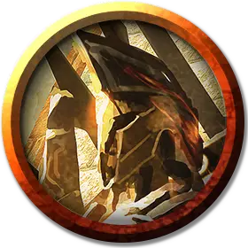

Мелетский гоплит
Meletian Hoplite
Средний Гуманоид, любое мировоззрение

Класс Доспеха 18 (кираса, щит)
Хиты 49 (9к8 + 9)
Скорость 30 футов
| мод | спас | ||
|---|---|---|---|
| СИЛ | 16 | +3 | +3 |
| ЛОВ | 14 | +2 | +4 |
| ТЕЛ | 12 | +1 | +1 |
| мод | спас | ||
|---|---|---|---|
| ИНТ | 16 | +3 | +5 |
| МДР | 13 | +1 | +1 |
| ХАР | 11 | +0 | +0 |
Навыки Восприятие +3, История +5, Магия +5
Чувства пассивное Восприятие 13
Языки Общий
Опасность 3 (700 опыта)
Бонус мастерства +2
Особенности
Использование заклинаний. Гоплит является заклинателем 3-го уровня. Его базовой характеристикой является Интеллект (Сл спасброска от заклинания 13, +5 к попаданию атаками заклинаниями). У гоплита подготовлены следующие заклинания волшебника:
• Заговоры (неограниченно): волшебная рука [mage hand], малая иллюзия [minor illusion], луч холода [ray of frost] (см. "Действия" ниже);
• 1 уровень (4 ячейки): сверкающие брызги [color spray], поспешное отступление [expeditious retreat], усыпление [sleep];
• 2 уровень (3 ячейки): размытый образ [blur], облако кинжалов [cloud of daggers], невидимость [invisibility].
Действия
Мультиатака. Гоплит совершает три атаки оружием. Он может заменить одну из атак Лучом холода.
Копье. Рукопашная или дальнобойная атака оружием: +5 к попаданию, досягаемость 5 футов или дальность 20/60 футов, одна цель. Попадание: 6 (1к6 + 3) колющего урона или 7 (1к8 + 3) колющего урона, если используется двумя руками для рукопашной атаки.
Удар щитом. Рукопашная атака оружием: +5 к попаданию, досягаемость 5 футов, одно существо. Попадание: 5 (1к4 + 3) дробящего урона. Если целью является существо Среднего размера или меньше, оно должно преуспеть в спасброске Силы Сл 13, иначе упадёт ничком.
Луч холода (Заговор). Дальнобойная атака заклинанием: +5 к попаданию, дистанция 60 футов, одно существо. Попадание: 4 (1к8) урона холодом, и скорость цели уменьшается на 10 футов до начала следующего хода гоплита.
Описание
Мелетские гоплиты комбинируют хитрость, веру и магию для защиты своего прибрежного дома. Большинство из этих опытных солдат служат в Благочестивой армии, защитниках Мелетида, которая использует множество проверенных стратегий и гибких формирований войск, чтобы получить преимущество над врагами. Подкрепленные обученными скакунами-грифонами и пегасами, они наносят удары врагам там, где те меньше всего ожидают.
Гоплиты
Гоплиты — это высококвалифицированные воины, сведущие не только в стратегии и тактике, но и в прославлении духа воина, основы идеала, который создает нерушимую связь между членами воинского подразделения. В бою гоплиты обычно работают группами и используют скоординированную тактику, чтобы одерживать победы.
В таблицах «Отряды гоплитов» представлены виды названий, используемых отрядами гоплитов, родом из великих полисов Тероса. Подумайте об использовании этих названий для вооружённых сил, с которыми персонажи сталкиваются во время своих приключений или частью которых они когда-то были.